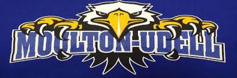
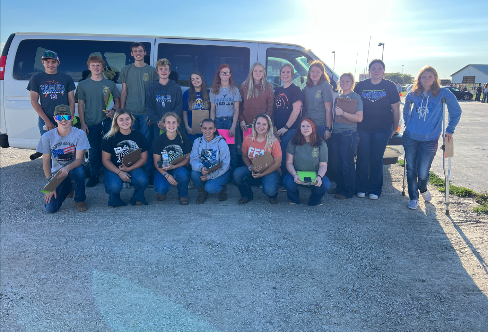
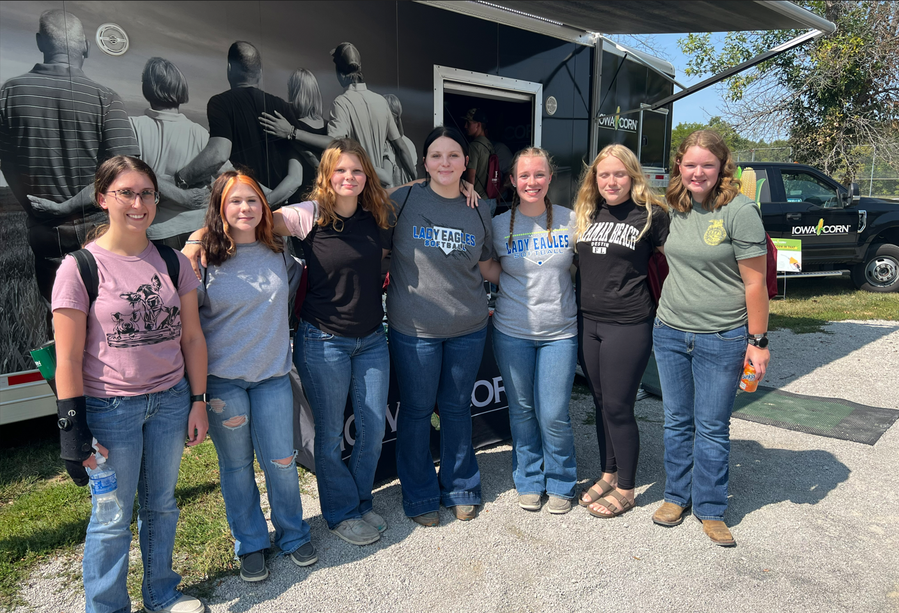
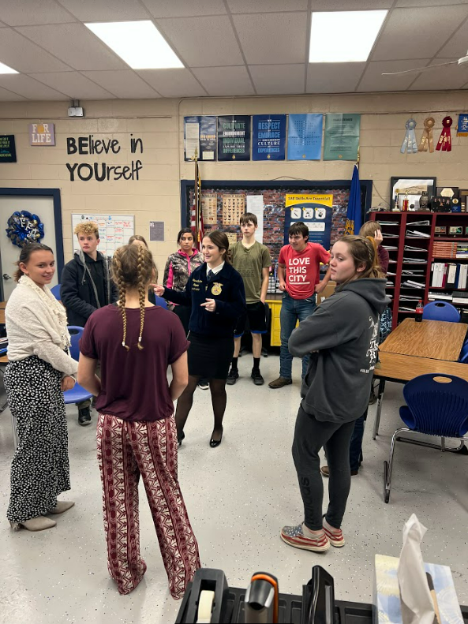
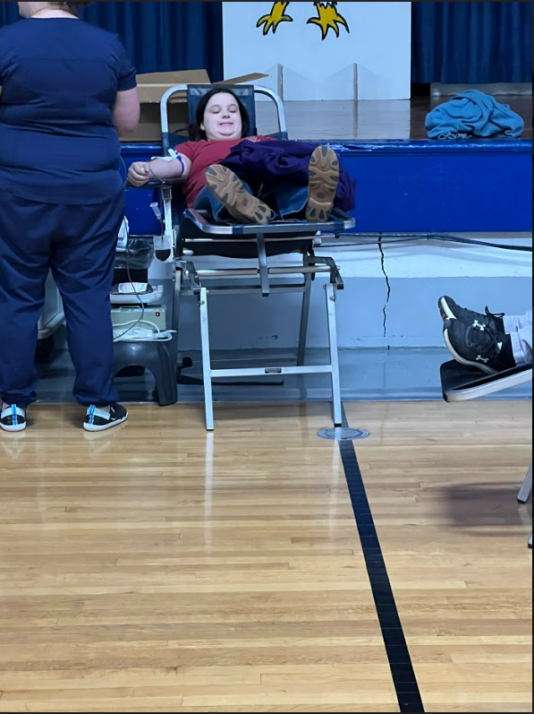
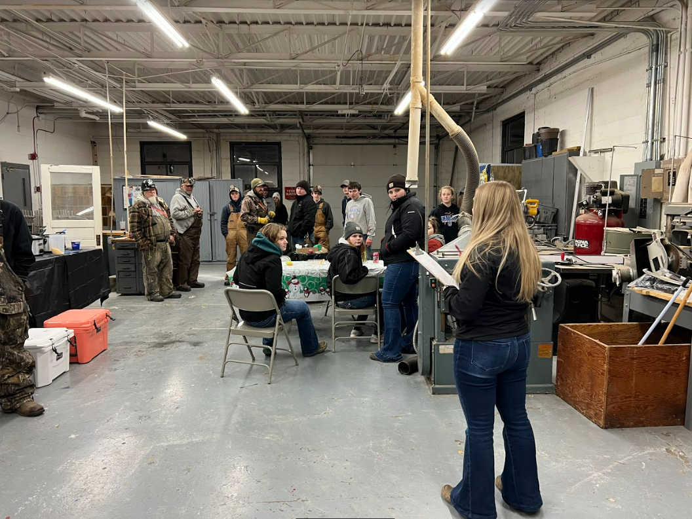

<!DOCTYPE html>
<html lang="en">
</html>
<head>
<style>

	#container {font-style:Verdana, Geneva, sans-serif;
		font-size:18px;
		color:white;}
	body {background-color: #036;}
	.div2{clear:left; margin-top:10px}
	.div3{clear:left;margin-top:10px}
	.div4{clear:left; margin-top:10px}
	.div5{clear:left; margin-top:10px}
	.div6{clear:left; margin-top:10px}
	header {background-color: #036;
		padding:10px;
		color:white;}
	nav {background-color: #036;
		padding:10px;
		color:white;
		height:75px}
	nav ul {list-style-type:none;
			margin:0;
			padding:0;}
	nav li {display:inline;
			padding-right:75px;
			color:white;
			font-size:15px;}
	nav li a {text-decoration:none;
				color:white;}
	nav a:link {text-decoration:none;
				color:white;}
	nav a: visited {text-decoration:none;
					color:white;}
	nav a:hover {text-decoration:underline;}
		padding:10px;
		color:white;}
	h1 {font-size:30px;
		color:#09f;}
	.center {
		display: block;
		margin-left: auto;
		margin-right: auto;
		width: 50%;
		height:200px}
</style>

</head>
<body>
<div id="container">
<header><!--this is newly inserted-->
<a href="ChapterWebsite.html"></a>
</header>
<nav>
<ul class="center"><li><a href="Us.html">Officers</a></li>
<li><a href="CalenderofEvents.html">Calender of Events</a></li>
<li><a href="Committees.html">Committees</a></li>
<li><a href="ChapterWebsite.html">Home</a></li>
<li><a href="ChapterHistory.html">Chapter History</a></li>
<li><a href="Join.html">Join</a></li>
</ul>
</nav><!--this is newly inserted-->
<h2>Get some insight into what has happened for our chapter this year.</h2>
<div class="div2">
<p>
<pre>
Everyone but one member from our chapter went to CDE day this year.
We had Sariah Johnson get 38th indivdual in equine novice.
Chloe Potter - 73rd individual, Jasmine Rew - 98th individual, 
Hayden Brinegar 290th individual, and Cameron Swarts - 323rd indivdual in Livestock Novice.
Miah Burgher - 1st individual, Allen Pace - 2nd individual, Porter Kaster - 6th individual, 
Lily Jackson - 7th individual in Greenhand Quiz.
Ashlyn Lasley - 4th individual, Rachel Ogden - 8th individual, 
Stephaine Leager - 11th individual, Gracie McCoy - 137 individual in Dariy Foods team 1.
Lexis Smith - 2nd individual, Theron Brummit - 3rd individual, 
Zoie Simkoff - 100th individual in Dariy Foods team 2.
Sage Salladay - 88th individual in Vet Science.
Garrett Pace - 2nd individual in Advanced FFA Knowledge.
</pre>
</p>
</div>
<div class="div3">
<p>
6 of our sophomore's when to the Soil jugdeing contest.
they went to Indian Hills College to learn about soil judging for a future contest.</p>
</div>
<div class="div4">
<p>
We had the Iowa FFA State Officers come and visit our school for a day, they hung around and talked with every ag class.
for some classes they played some games, with the FFA officers however they talked to us about things that we would wish to improve on and how we could go about doing that.</p>
</div>
<div class="div5">
<p>
This year we tryed something new with a blood drive.
We had 21 people sign-up to donate blood but only 13 people were eligible to give there blood. </p>
</div>
<div class="div6">
<p>
We had our annual coon hunt, this is an event were we invite hunters out we provide a soup supper, then they go out hunting for about 4 hours and the team with the heavist coon would win, team with the smallest, and the team with the most weight out of 3 coons. the prize was dog food which was donated by memebers of the community and business. </p>
</div>
</div>
</body>